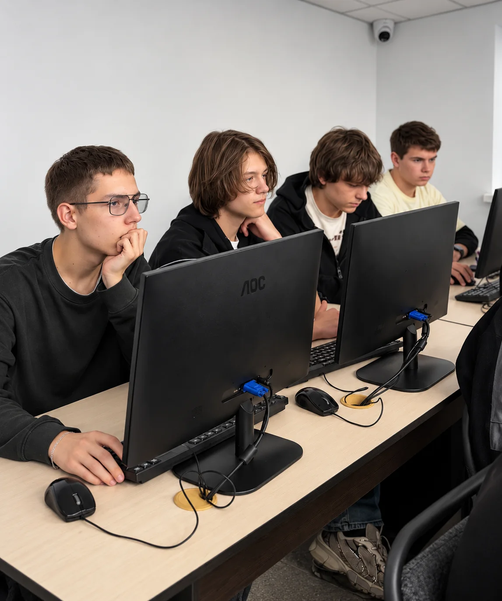
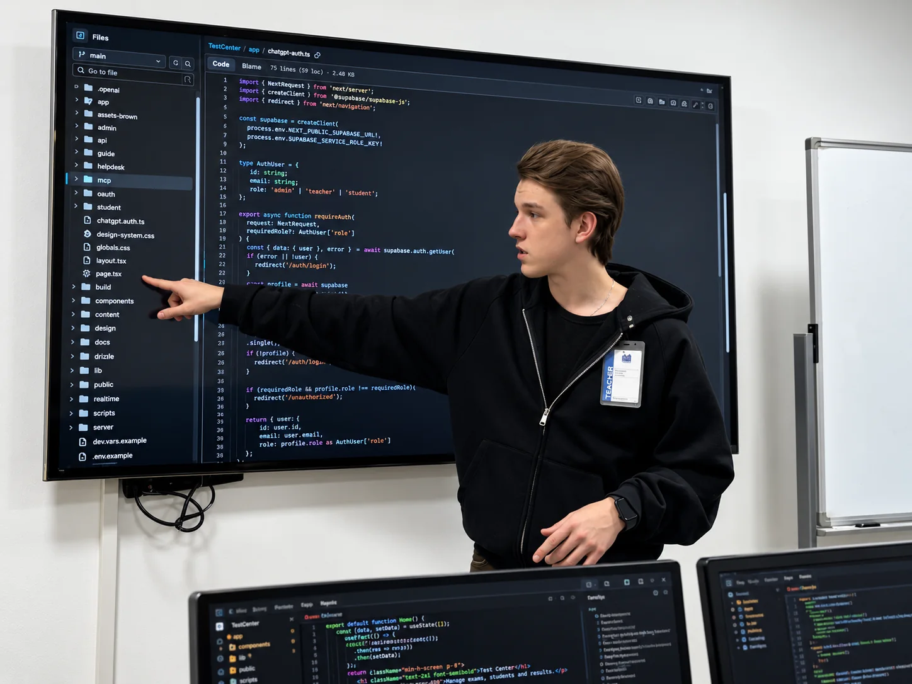
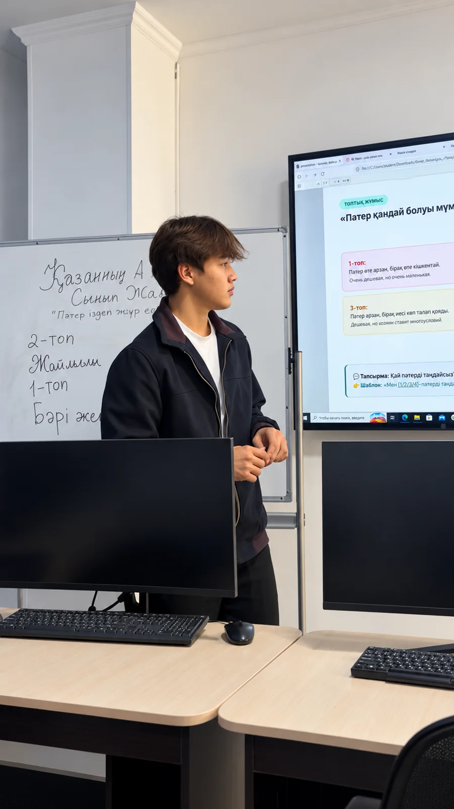
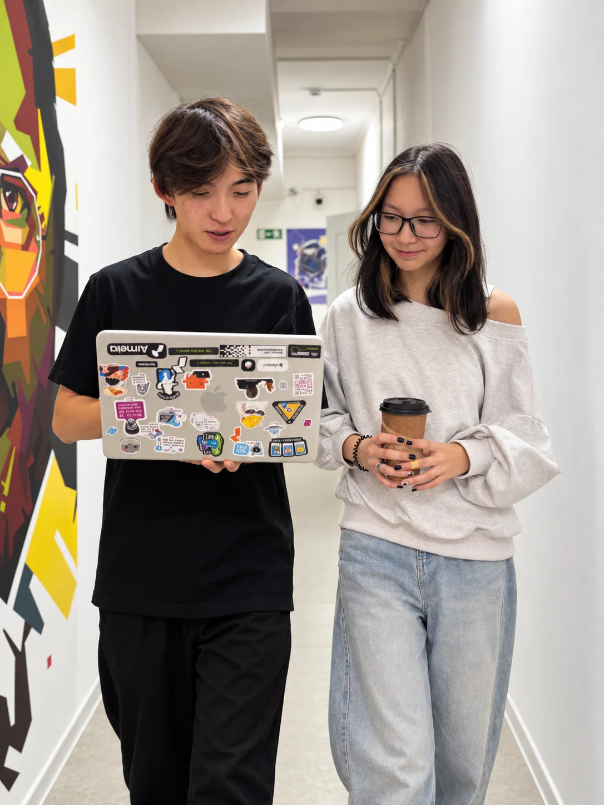
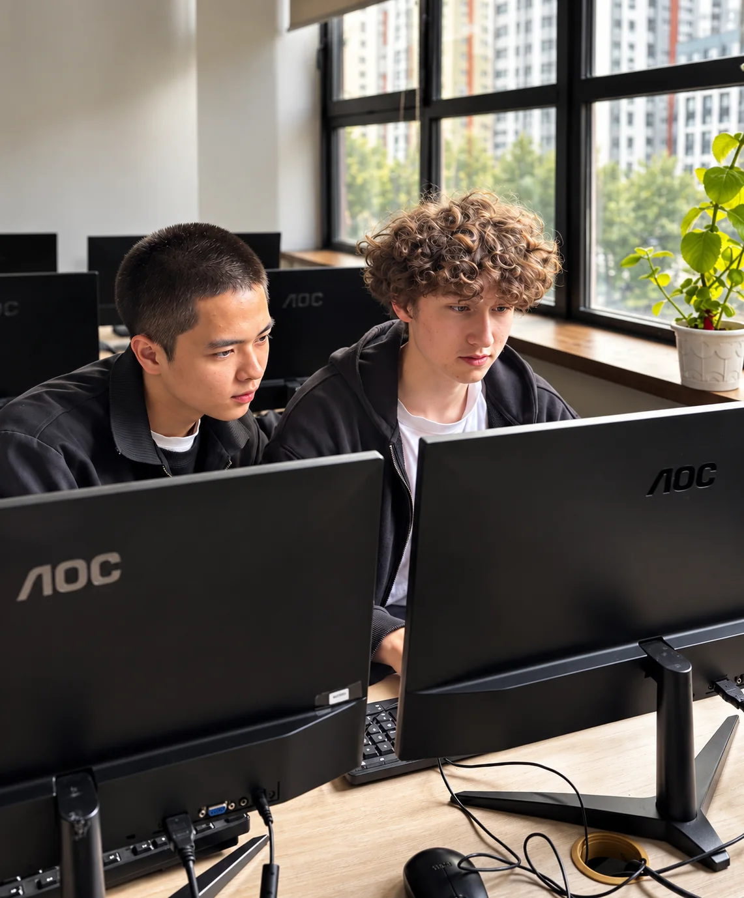
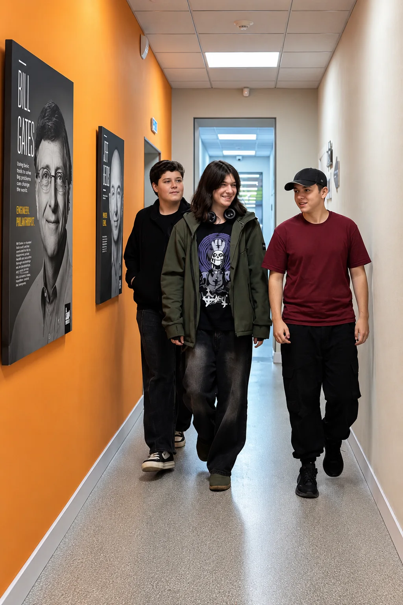

Подготовка к уровню AI-Native Developer
Учеба построена на практике и работе с искусственным интеллектом: создание реальных цифровых продуктов, код-ревью и менторство от специалистов индустрии.
Познакомьтесь с Академией и узнайте о программе.
 Claude
Claude CursorGitHub Copilot
CursorGitHub Copilotсоздание цифровых продуктов при поддержке искусственного интеллекта.
проектов, подтверждающих реальные навыки на собеседованиях.
для успешного трудоустройства
Учеба построена на практике и работе с искусственным интеллектом: создание реальных цифровых продуктов, код-ревью и менторство от специалистов индустрии.
Комплексное освоение полного цикла создания продуктов: от идеи и AI-прототипа до фулстек-приложения, облачной инфраструктуры и автономных AI-агентов.
Учебный план адаптирован под требования современного рынка, предусматривает работу с более чем 90 практическими проектами и подготовку к ведущим международным сертификациям.
студентов получают первый офер еще во время учебы.
практики+портфолио, что подтвердит навыки на собеседовании.
Вы шаг за шагом овладеете основами программирования, поймете ключевые принципы работы с кодом и научитесь работать с современными инструментами разработки.
Если вы работаете в IT или имеете базовые знания программирования, курс поможет расширить ваши умения. Вы научитесь интегрировать AI-инструменты в свою работу и создавать более сложные и современные проекты.
Оффлайн или онлайн
3 занятия в неделю в академии + самостоятельная работа
1 занятие в неделю + самостоятельная работа
Живые интерактивные занятия с преподавателями на платформе Microsoft Teams.

Учеба проходит в современных аудиториях и лабораториях, оснащенных всем необходимым. Предусмотрено персональное рабочее место с компьютером и доступ к современному программному обеспечению и платформам от ведущих технологических лидеров – Anthropic, Google Cloud, Microsoft, AWS.

Занятия ведут ведущие специалисты с реальным опытом в области IT. Преподавание сосредоточено не на сухой теории, а на разборе практических кейсов, реальных проектов и современные технологии.

Помимо основных занятий программа предусматривает участие в мастер-классах и воркшопах от экспертов IT-индустрии. Это позволяет перенимать практический опыт ведущих специалистов отрасли.

В процессе обучения осуществляется работа над реальными задачами от IT-компаний. Это позволяет применять полученные знания на практике, развивать профессиональные навыки и овладевать командной работой.

Программа предусматривает создание мощного портфолио из собственных проектов, которое станет весомым преимуществом при трудоустройстве. Академия оказывает поддержку в поиске первой работы по сети партнерских IT-компаний.

Программа подразумевает развитие soft skills: командной работы, коммуникации, лидерства и презентационных навыков. В рамках English Speaking Club осуществляется практика английского языка для IT и подготовка к собеседованиям.
Познакомьтесь с Академией и узнайте о программе.
| Курсы | Курс-профессия: AI-Native Developer | ЗВО | |
|---|---|---|---|
| Практика | Базовые навыки | Полный комплекс знаний для синергии разработчика и AI в карьере для успешной карьеры | Глубокая теория |
| Глубина знаний | Минимум практических задач | Обучение на реальных кейсах: создание 90+ проектов. | Преимущественно теория |
| Сертификация | Сертификат курса | Диплом Академии IT STEP | Диплом |
| карьерный рост | Без гарантии трудоустройства | Помощь в трудоустройстве через партнерские IT-компании. | Ограниченная поддержка |
| Трудоустройство | Узкоспециализированные роли | Уже во время учебы студенты трудоустраиваются по востребованным профессиям | После окончания учебы |
| Продолжительность обучения | 2-3 месяца | 18 месяцев | 4-6 лет |
| Преподаватели | Практикующие специалисты | Баланс опыта реальных разработчиков и фундаментальных знаний | Преимущественно теоретики |
| Когда подходит | Работаете уже в сфере и хотите углубленные знания в одном направлении | Хотите получить практические навыки для работы с нуля | Общее развитие или строительство карьеры в науке |
Познакомьтесь с Академией IT STEP и узнайте, как проходит обучение на практике.
Алматы, мкр. Коктем-3, дом 16А
Алматы, ул. Байсеитовой, 45
Тема урока и время проведения зависят от расписания Академии.
Записаться на пробный урокВ первую очередь, это определяется вашим желанием. У нас еще не было ни одного студента, у которого бы не получилось освоить новую профессию. Запишитесь к нам на визит, и мы протестируем ваши знания и при необходимости поможем подготовиться.
В нашем филиале стационарный формат обучения, то есть оффлайн в Академии. Стационар подходит для тех, кто привык получать знания и опыт максимально погружаясь в новую сферу в окружении единомышленников.
На стационаре может учиться любой человек в возрасте от 15 до 55 лет, независимо от базового образования. Главное иметь базовые знания компьютера и желание учиться. При поступлении никаких экзаменов, только тест на знание ПК.
Да, нужно лишь выбрать подходящее время с учебной частью. Наши учебные аудитории доступны по графику работы филиала.
Для заключения договора вам понадобятся: удостоверение личности заказчика старше 21 года и документ с данными обучающегося, если он(а) младше 21 года и не является заказчиком. С 18 лет можно выступать заказчиком только при одобрении родителя/опекуна.
Если вас интересует дистанционное обучение, Компьютерная Академия запустила онлайн-филиал, где вы можете проходить обучение полностью онлайн.
Диплом Компьютерной Академии ШАГ на двух языках: русском и английском, или казахском и английском. Также вы получите сертификаты от Cisco в случае сдачи на сертификацию.
г. Алматы, Коктем-3,
дом 16а.
улица Байсеитовой, 45